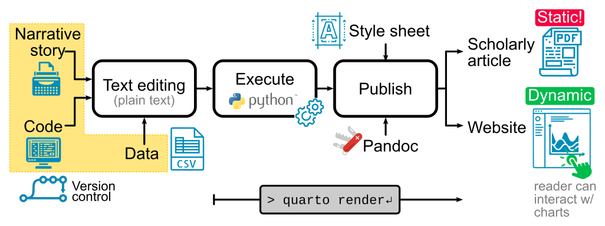

2 Course concept
All course content is managed in github. On changes locally the complete content is updated.
Chapter 1. What is the technology behind this course.
 Figure 1: Course writing workflow, starting from plain text (narrative, code and data) all under version control for reproducibility.
The course consists of the following complementary parts which should allow as much offline studying as possible:
- short lectures about pharmacokinetics in the form of a chapter with content
- slides
- short videos of the slides
- simple apps for exploration
- interactive notebook for exploration
- quizzes
2.1 Form/Technology
- Lecture scripts This is the complete reference information to learn; minimal interactivity; supports studying the content.
- Jupyter notebooks + markdown => cross compilation to
- Short presentations
- [~] currently the presentations are in google slides; motivational content; short; 5-15 min
- OpenEdx course: markdown -> OLX (mu), to openedx course format
- figure out how to customize compilation to different targets in Quarto; I.e. special behavior for book vs. slides.
2.2 Different classes
- teaching notebooks => rendered to content
- exercise notebooks
- solution notebooks/material
2.3 Version control
- Course content is managed in a GitHub repository (version control)
2.4 Continous integration and deployment
- CI via GitHub actions is used to automatically build and deploy the course content.
2.5 Software and tools
- quatro for conversion;
- openedx (docker container)
2.6 AI support for writing text
- All text creation is supported by ChatGPT.
2.7 Corporate Styling for the course
- use consistent colorschema and logos
2.8 Hosting
- OpenEDX is hosted using the de.NBI cloud (or HU resourses) via OpenStack
2.9 Notebook and markdown based publishing tools
2.9.1 Quarto
- Quarto is an open-source scientific and technical publishing system available from https://quarto.org/.
- Publish reproducible, production quality articles, presentations, dashboards, websites, blogs, and books in HTML, PDF, MS Word, ePub, and more.
- For a nice introduction to the features see: https://gael-close.github.io/posts/2209-tech-writing/2209-tech-writing.html
2.9.1.1 Interactivity
- Quarto supports interactivity via different methods: https://quarto.org/docs/interactive/
- Create custom JavaScript visualizations using Observable JS: https://quarto.org/docs/interactive/ojs/
- Incorporate Jupyter Widgets: https://ipywidgets.readthedocs.io/en/latest/
- Shiny for Python integration: https://quarto.org/docs/dashboards/interactivity/shiny-python/index.html
2.9.2 Jupyterbook
- Jupyterbool is an alternative to Quarto with some overlapping functionality: https://jupyterbook.org/en/stable/intro.html
- Build beautiful, publication-quality books and documents from computational content.
2.10 Presentations
2.10.1 reveal.js
- reveal.js is an open source HTML presentation framework. It’s a tool that enables anyone with a web browser to create fully-featured and beautiful presentations for free.
- Presentations made with reveal.js are built on open web technologies. That means anything you can do on the web, you can do in your presentation. Change styles with CSS, include an external web page using an
iframeor add your own custom behavior using our JavaScript API. - The framework comes with a broad range of features including nested slides, Markdown support, Auto-Animate, PDF export, speaker notes, LaTeX support and syntax highlighted code.
- https://revealjs.com/course/
- nice integration with Quarto; https://quarto.org/docs/presentations/revealjs/demo/#/title-slide
- https://github.com/quarto-dev/quarto-web/blob/main/docs/presentations/revealjs/demo/index.qmd
2.11 Interactive plots
2.11.1 plotly
- https://plotly.com/python/ ### altair
- https://altair-viz.github.io/
2.12 Interactive webapps
2.12.1 Shiny for python
- possible integration with Quarto
2.12.2 Voila
- voila notebooks: https://voila.readthedocs.io/en/stable/
- Voilà allows you to convert a Jupyter Notebook into an interactive dashboard that allows you to share your work with others. It is secure and customizable, giving you control over what your readers experience.
2.12.3 Streamlit
- https://streamlit.io/
- Turn your data scripts into shareable web apps in minutes. All in pure Python. No front‑end experience required.
2.12.4 Dash
- Developed by Plotly, Dash is ideal for creating complex, interactive web applications using Python.
- Supports multi-page apps and scales well for large datasets and multiple users.
- Requires knowledge of HTML, CSS, and JavaScript for advanced customization
2.12.5 Panel
- https://panel.holoviz.org/
- Panel is an open-source Python library designed to streamline the development of robust tools, dashboards, and complex applications entirely within Python.
2.12.6 Framework
- https://github.com/observablehq/framework
- Observable Framework is a free, open-source, static site generator for data apps, dashboards, reports, and more. Framework combines JavaScript on the front-end for interactive graphics with any language on the back-end for data analysis. Framework features data loaders that precompute static snapshots of data at build time for dashboards that load instantly.
2.13 Deployment of notebooks
2.13.1 binderhub
- very slow
- https://binderhub.readthedocs.io/en/latest/
2.13.2 jupyterhub
- JupyterHub brings the power of notebooks to groups of users. It gives users access to computational environments and resources without burdening the users with installation and maintenance tasks. Users - including students, researchers, and data scientists - can get their work done in their own workspaces on shared resources which can be managed efficiently by system administrators.
- https://jupyter.org/hub
- https://tljh.jupyter.org/en/latest/howto/index.html
https://education.github.com/globalcampus/teacher?email_referrer=true
nbgrader: https://nbgrader.readthedocs.io/en/stable/ https://www.youtube.com/watch?v=bEcxnR2V-_8 Otter grader & gradescope
3 OpenEdx
- https://openedx.org/
- Enable online campuses, instructor-led courses, degree programs, and self-paced courses using a single platform.
3.1 OpenEdx Deployment
- deployment with tutor: https://docs.tutor.edly.io/index.html
3.2 H5P
- Play H5P content in Open edX using h5pxblock
- https://github.com/edly-io/h5pxblock
3.3 OpenEdx Notebook Integration
- openedx notebook integration: https://github.com/parmentelat/nbhosting ?!
- https://github.com/overhangio/jupyter-xblock JupyterHub hosts Jupyter instances with authentication (e.g. OAuth; IDK about using edX users as JupyterHub users with individual Docker image instance containers with nbgrader/xblock) The new jupyter-viewer-xblock (https://github.com/ibleducation/jupyter-viewer-xblock) allows to embed notebooks dynamically from a public URL. Demo here! https://www.youtube.com/watch?v=K8jhWgQnxvI
- https://github.com/overhangio/tutor-jupyter; This is a plugin for Tutor that makes it easy to integrate Jupyter notebooks in Open edX. It achieves the following: 1. Install the official jupyter-xblock in the Open edX LMS and Studio. 2. Run a Docker-based JupyterHub instance with a Docker spawner.
4 GitHub Global Campus
Focus on teaching with GitHub Classroom Managing and organizing your class is easy with GitHub Classroom. Track and manage assignments, automate grading, and help students when they get stuck— all while using GitHub.
5 Education: Course structure and best practise
5.1 Teaching and Learning with Jupyter
This handbook is for any educator teaching a topic that includes data analysis or computation in order to support learning. - https://jupyter4edu.github.io/jupyter-edu-book/
5.2 Open edX Educators
- Material on how to build and design courses: https://docs.openedx.org/en/latest/educators/index.html
- Instructional Design Concepts: https://docs.openedx.org/en/latest/educators/navigation/creating_course.html#instructional-design-concepts
5.3 Text to speech
5.3.1 Whisper AI
- https://openai.com/index/whisper/
5.3.2 ElevenLabs
- https://elevenlabs.io/
5.4 Quatro document creation
One can update the notebooks in their favourite environment, e.g. jupyterlab
jupyter lab notebooks/hello.ipynbThe content can be rendered to the respective output format using the render command.
quarto render notebooks/hello.ipynb --to html
quarto render notebooks/hello.ipynb --to pdf
quarto render notebooks/hello.ipynb --to revealjs
quarto render notebooks/hello.ipynb --to pptxTo execute the notebooks use the execute flag
quarto frender notebook.ipynb --executeTo preview the HTML use the preview command.
quarto preview notebooks/hello.ipynb